Fundamental limits of proofs of programs
Cultures of Programming — Part 5
Tomas Petricek, Charles University, Prague

Algol
Object of mathematical beauty

Algol report (1960)
Formally describes language syntax
What about semantics?
What happens when programs are executed?
Turns out to be harder!
Early semantics of Algol
Microalgol (McCarthy, 1964)
- Small subset, but includes
goto - Defined as a function \(\texttt{micro}(\pi,\xi)\)
- Mathematically-defined interpreter
Axiomatic basis (Hoare, 1969)
- Axioms of fortran constructs
- For example: \(\{ p(f) \} x := f \{ p(x) \}\).
- Admits that
gotois difficult
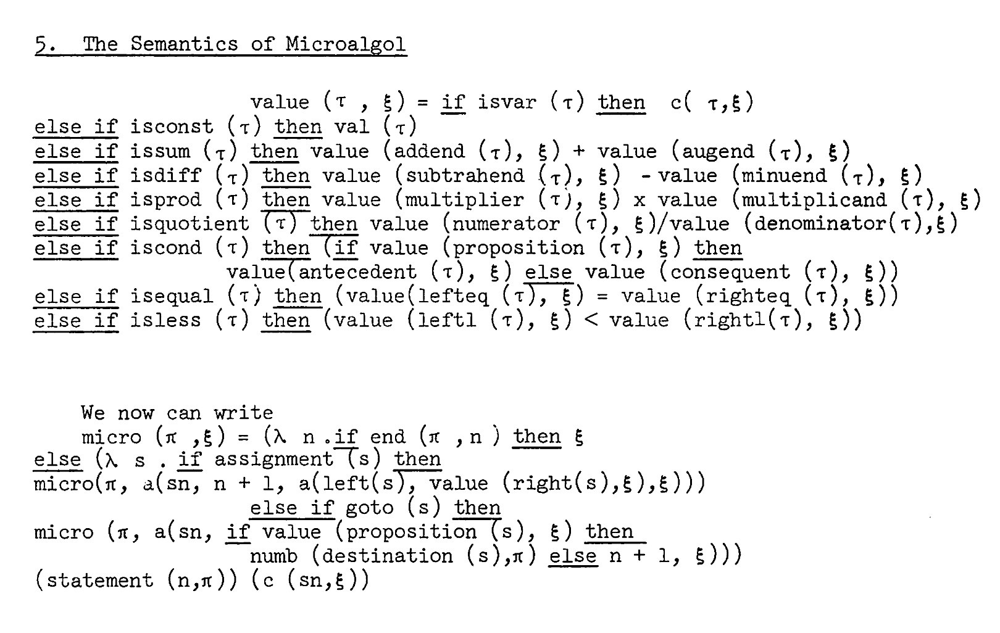
Microalgol definition by McCarthy
Program \(\pi\), execution state \(\xi\)
Early days optimism
"Those difficulties can be resolved and that a clear description of the state of an Algol computation will clarify the problem of compiler design."
(McCarthy, 1964)
"The practical advantages of program proving will eventually outweigh the difficulties."
(Hoare, 1969)
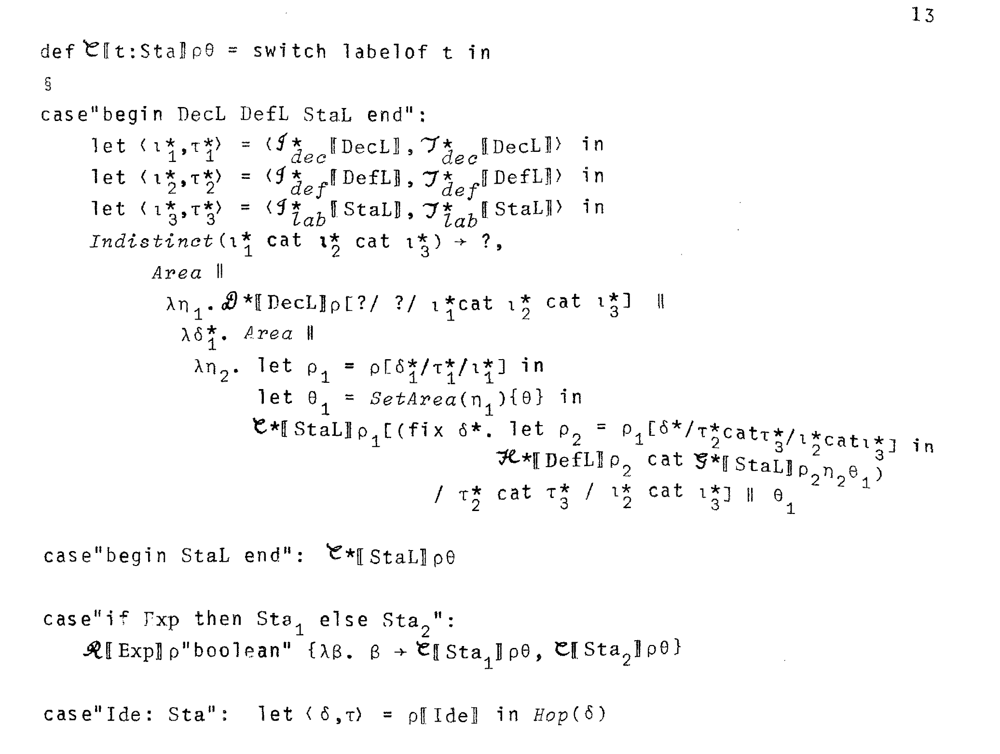
Mosses (1974)
Method by Strachey
Assign mathematical object to constructs
Terms of \(\lambda\) calculus!
Vienna Development Method
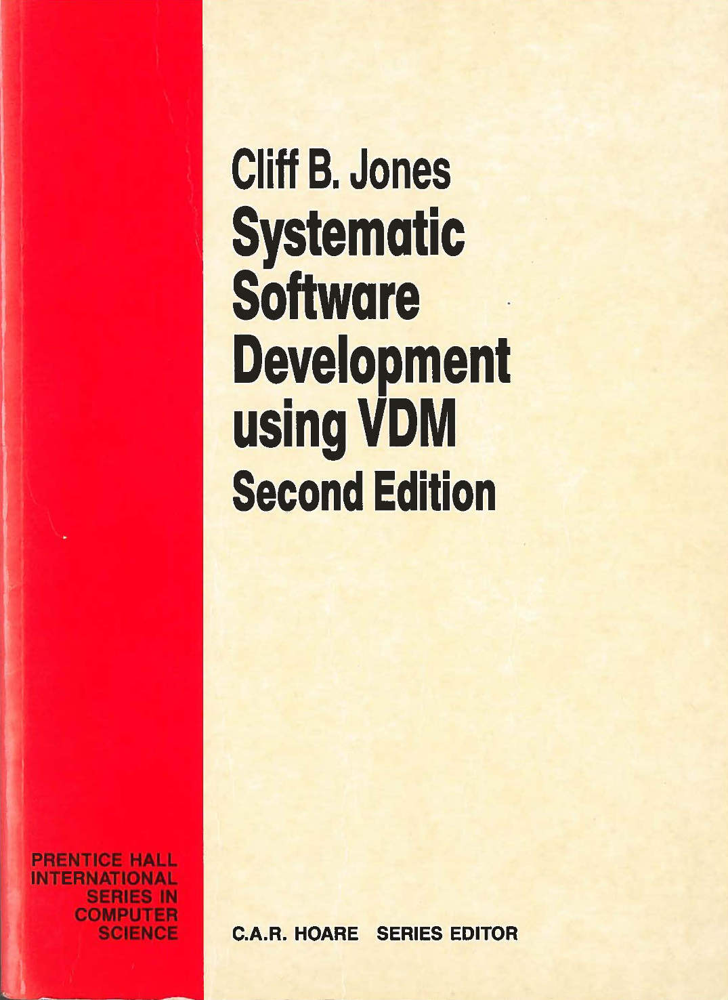
Tool-supported definition
- Aim to model more complex PL/1
- Vienna Definition Language (VDL)
- Algol as the starting point
- 50 page long definition
Formalising Algol in VDL
- Machine-checked definition
- 67 page definition (1968) ala McCarthy
- book-chapter length (1978) after Mosses
Algol
Many formal definitions
- Small subset vs. full language
- Surprised "is's as long as it is"!
- "Algol 60 is just not nearly as well-behaved"
- 60 pages of definitions, no theorems!
From Algol 60 to Algol 68
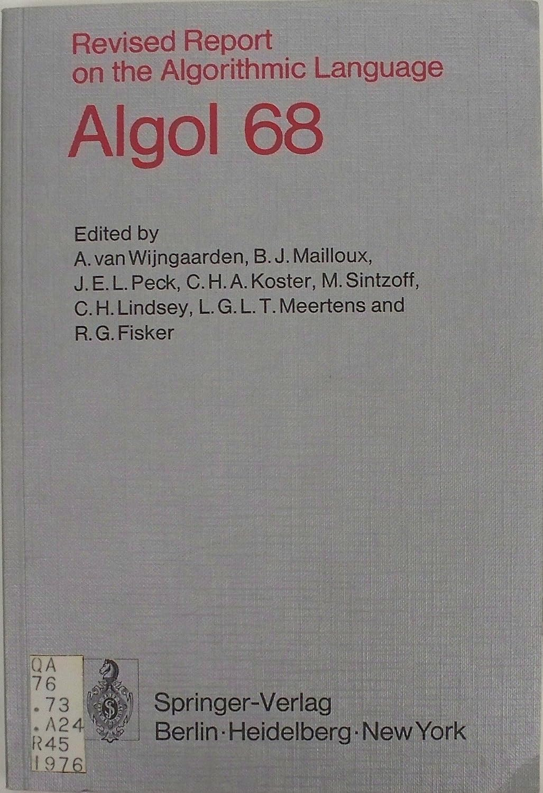
Further development
- Universal language aims
- More orthogonal definitions
Sources of complexity
- Using meta-grammar and grammar
- Modes (
ref,proc,struct,union,flex) - Coercions (dereferencing, deproceduring, uniting, widening, rowing, and voiding)
Maybe not so bad today!
Mathematical programme
Programming problems
"Facing tasks of completely different
and still growing scope and scale."
From "expressing programs in a language" to "language to support good practices."
Responses to complications
- IFIP WG 2.3 on Programming Methodology
- NATO Software Engineering conference (1968)
Proofs of programs
Social processes
De Millo, Lipton & Perlis
Met at Yale University seminar
- De Millo visiting Lipton
- Presenting verification research
- Extensive algorithm proof
Perlis' question
"Why does it take 20 pages to prove a program that is obviously correct?"
What does it take to convince a human?
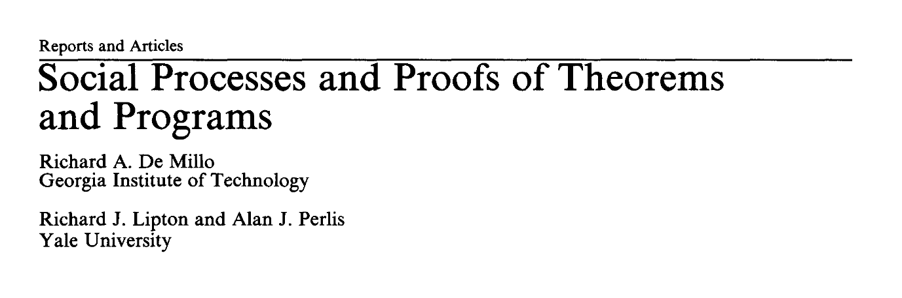
Proofs in logic
Finite sequences of propositions, each of which is
an axiom, an assumption or follows from earlier
propositions by a rule of inference.
Proofs in practice
Mix of natural and formal language, aimed to
convince another qualified colleague
Source of confidence
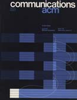
Central to mathematical practice
- Taught at universities
- Discussed at whiteboard sessions
- Mathematicians enjoy elegance & tricks
- Believe it could be elaborated
Proofs of programs differ
- Bound to be secondary
- Programs are written to be run
- Certification does not play the same role
- Repetitive, large number of cases
Letters to the editor
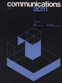
Computer scientists
- A pamphlet from the Middle Ages (Dijkstra)
Industry readership
- Wisdom, fairness, style, rigour, and wit
- First article enjoyed since joining the ACM
- Cannot recall a single instance in which a proof of a program's correctness would have been useful
Proofs of programs
Engineering and managerial answers
Proofs of programs
-
De Millo et al. mix many cultures
Mathematical with humanistic and engineering twist -
Purely mathematical verification bound to fail
Real-world software systems are too complex -
1960s proofs by hand no longer suffice
Response comes from different perspectives! -
Managerial and engineering approaches
Scaling proof methods to real-world systems
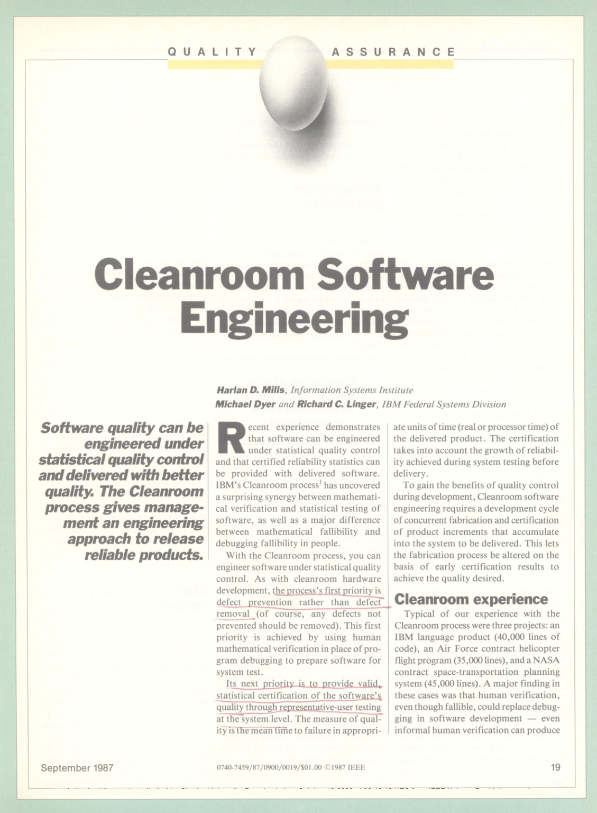
Cleanroom Software Engineering
Harlan Mills at IBM
PhD in game theory
Extension of Chief Programmer Teams
"Software engineering without mathematical verification is no more than a buzzword."
Cleanroom Software Engineering
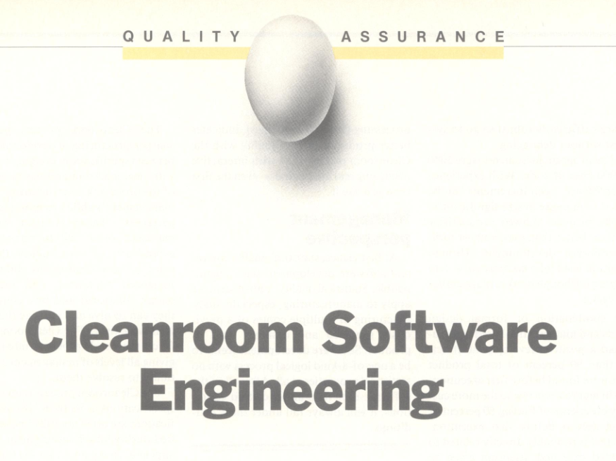
Surgical team model
- Extends Chief Programmer Teams
- Lead surgeon, supported by assistants
- Controlled environment (cleanroom)
Managing reliability
- Review conformance to specification rigorously
- Degree of rigor a managerial choice
-
Statistical control of reliability over a
probability distribution of usage scenarios
Mechanical proof checking
Mechanical proof checking
"One should prove that [a program] meets its specifications, and this proof should be checked by a computer program."
(McCarthy, 1963)
"A mechanical theorem prover does not act as an oracle ... but as an implacable sceptic that insists on all assumptions being stated and all claims justified."
(Rushby & Von Henke, 1990)
Mechanical proof checking
-
Logic theorist (Newell & Simon, 1950-1960s)
AI will be able to do more than just check! -
Robert Boyer & J Strother Moore (1970s)
Proves (with luck) properties of LISP-like programs -
LCF prover (Milner, 1970s)
Motivated by compiler proofs, ML meta-langauge -
Separation logic (2000s)
Infer static analyser by Facebook
Formal verification in practice
sel4 microkernel
A range of mission
critical projects
CompCert compiler
Faster than gcc without (untrusted) optimizations
Verification tools
Static Driver Verifier at Microsoft, Infer at Facebook
Proofs of programs
Fundamental limitations
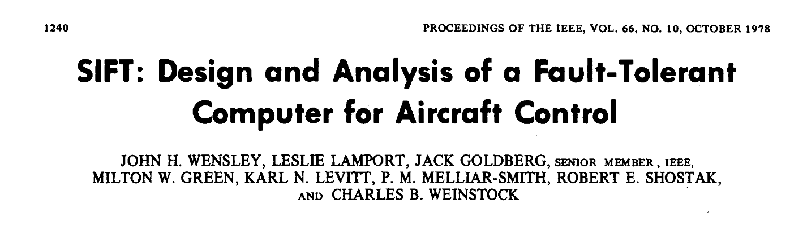
Software Implemented Fault Tolerance
Proof could only be completed if they also had a precise specification of how the underlying microprocessor executes instructions and also the timing of such execution.
Boyer and Moore (1983)
Ballistic Missile Early-Warning System
Brian Cantwell Smith (1985)
- Mistook rising moon for a missile
- If it was verified, should it be trusted?
Inherent limitations
- Models ignore timing or the moon
- Programs are not abstract mathematical entities
Proofs check compatibility of two descriptions!
Hardware verification
VIPER microprocessor
The first commercial microprocessor with both a formal specification and a proof that the chip conforms to it
Avra Cohn's comment
Device can be described ... and the description verified; but ...there is no way to assure the accuracy of the description
Lawsuit about the nature of the proof!
Proofs
Programs vs mathematics
- Programs are not mathematical entities
- Real hardware and real world!
- Non-determinism, temperature, etc.
- Mathematical model is never fully detailed
The very idea (Fetzer, 1987)
Verification is nonsensical
-
Program is a different kind of
thing than mathematics - Category mistake
What can verification mean?
-
Machine as formal entity
Valid, but does not say anything -
Machine as empirical description
Proof is empirical knowledge
Reaction to the paper
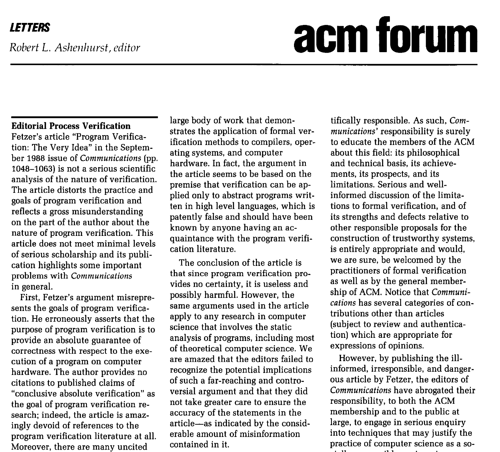
Letter by computer scientists
- Attacks a parody of verification
- Not a serious scientific analysis
-
Ill-informed, irresponsible,
and dangerous article
Reveals something true
- Earlier critiques say similar thing!
- Ignored or hidden in long reports...
Beyond mathematical culture
-
Old-school proofs on whiteboard
Do not scale for problems like Algol definition! -
Response involves other cultures
Managerial Cleanroom, engineering tools -
Shifting meaning of proofs
From social activity to checkmark with caveats -
Different kinds of proofs
CompCert vs. programming language theory
Cultures of Programming
Home Continue to Part 6